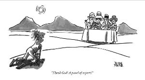

Oh those wonderful wise spiritual teachers.
Each in their way seeming to hold the keys to this weird, confusing, bucking-bronco life.
Each in their way offering preferred methods to ride it with more ease, more peace, more answers.
Each having attained where we want to be, and appearing to know things, telling us they know things.
We trust them, depend on them, love them, and they claim to love us back.
Oh we love that too. “They’re so full of real love!” we say dreamily, filling up on that fantasy.
Although... they don’t know us, really. After all, they haven’t memorized all our words and studied all our opinions, the way we have with them.
Still, through their presence, books and podcasts we can sometimes feel better, transcend, feel peaceful.
Their wisdom surely rubs off on us.
And even when we move from one sage to the other over the years, passing along new favorites to friends-
“Have you seen this book from Ramana /Adya /Daryl /Robert /Michael /John /Tony /Rupert? THIS one makes it all clear!”...
Still, every one of them has it. And we don’t.
So we buy in.
We spend vast amounts of time, money, and mental real estate to ask some Wise Person questions like, "What has this been like for you?" and, "What do you think about xyx?" and, “Am I doing this right?” and, “What do I do when such and such happens?”
And their replies let us compare our not-there-yet lives to the fascinating stories about their arrived ones...
Letting us evaluate how we’re doing based on their answers.
Which is still really all about us. Not them.
So following sages is still really another way to perpetuate the sense of self, not see through it.
Yet the teachers very much encourage this. Every one of them graciously setting up opportunities to answer our questions. Even those who claim they don’t teach will happily and wordily sit in front of a room or circle to answer questions and try to make clear- with such certainty!- how things are and should be.
Because let’s face it. All of us- they and we together... know that their ideas are better than ours. Their answers count more than ours. Their experiences matter more than ours.
Their thoughts are right. Ours aren’t.
Even though really, all that important spiritual discourse is still just ideas, still just opinions.
Which are easily as potentially wrong as any other opinion.
And which do manage to solidify our already pervasive sense of lack, and need for improvement...
And turn us away from our own wisdom.
Conveniently, this keeps teachers in business. Whether money is involved or not.
So they're really not in a hurry for us to actually get it.
Which is perhaps why we never notice that since they’re believing thoughts and ideas just like we are,
Then that thing we think they have, which we want so earnestly?
We already have it.
They have nothing we don’t also have. What we seek is already ours.
In which case no one else is needed to provide it.
So if we’re ever curious to discover what’s already here and being ignored while we ask wise gurus to help us find it...
While we set aside our own wisdom to adopt theirs instead...
Perhaps we might take a breather from idealizing...
An equal-to-us depository of thoughts,
An equally opinion-believing,
Equally full of self,
Equally illusory,
Equally flawed,
Other.
Who knows? We might even find what we’ve looked for all along...
Right here.
Click here to get your every week.
"...nothing is being withheld from you. You are completely on your own. Everything is available for direct knowing. No one else has anything you need. No one else can lead you, pull you, push you or carry you.” ― Jed McKenna
